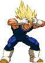
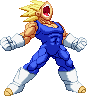

activate Sanity Mode (LV2)
Activating Sanity Mode has Vegeta blocking out Babidi's influences,
making him calmer and more focussed. This changes a few things, gameplay-wise:
- Upon activation an empty Sanity Bar is added to the screen, which represents his Sanity power.
- Vegeta can still Power Charge, but Sanity Charge is added. Hold Down+MP+MK to perform that.
- Using any of his Special Attacks gradually fills the Sanity Bar.
- You gain the ability to cancel Specials into Specials but you can't use this all the time;
- You get a free one after Sanity Mode activation and then another one after each and any EX Special.
- Gain the ability to cancel Special Moves into EX Special Moves.
- In Sanity Mode, Vegeta gains access to the Aura Burst (detailed below).
- Saiyan Pride Beatdown costs Lv2 instead of Lv3 and cancels the mode.
- Vegeta will perform a unique Finisher at the end of his Saiyan Pride Beatdown;
Lv1 - Final Shine Attack.
Lv2 - Final Flash.
Lv3 - Final Explosion.
- Upon activation an empty Sanity Bar is added to the screen, which represents his Sanity power.
- Vegeta can still Power Charge, but Sanity Charge is added. Hold Down+MP+MK to perform that.
- Using any of his Special Attacks gradually fills the Sanity Bar.
- You gain the ability to cancel Specials into Specials but you can't use this all the time;
- You get a free one after Sanity Mode activation and then another one after each and any EX Special.
- Gain the ability to cancel Special Moves into EX Special Moves.
- In Sanity Mode, Vegeta gains access to the Aura Burst (detailed below).
- Saiyan Pride Beatdown costs Lv2 instead of Lv3 and cancels the mode.
- Vegeta will perform a unique Finisher at the end of his Saiyan Pride Beatdown;
Lv1 - Final Shine Attack.
Lv2 - Final Flash.
Lv3 - Final Explosion.

Aura Burst
Majin Vegeta expells all his built-up energy into a massive, multi-hitting aura, which does big block damage.
Upon activating this, your Sanity Bar drains all the way until it's empty, after which the Sanity Mode is cancelled out.